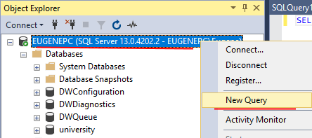

Основы T-SQL
Создание и удаление базы данных
Создание базы данных
Для создания базы данных используется команда CREATE DATABASE.
Чтобы создать новую базу данных откроем SQL Server Management Studio. Нажмем на назначение сервера в окне Object Explorer и в появившемся меню выберем пункт New Query.

В центральное поле для ввода выражений sql введем следующий код:
1 | CREATE DATABASE usersdb |
Тем самым мы создаем базу данных, которая будет называться "usersdb":

Для выполнения команды нажмем на панели инструментов на кнопку Execute или на клавишу F5. И на сервере появится новая база данных.
После создания базы даных, мы можем установить ее в качестве текущей с помощью команды USE:
1 | USE usersdb; |
Прикрепление базы данных
Возможна ситуация, что у нас уже есть файл базы данных, который, к примеру, создан на другом компьютере. Файл базы данных представляет файл с расширением mdf, и этот файл в принципе мы можем переносить. Однако даже если мы скопируем его компьютер с установленным MS SQL Server, просто так скопированная база данных на сервере не появится. Для этого необходимо выполнить прикрепление базы данных к серверу. В этом случае применяется выражение:
1 2 3 | CREATE DATABASE название_базы_данныхON PRIMARY(FILENAME='путь_к_файлу_mdf_на_локальном_компьютере')FOR ATTACH; |
В качестве каталога для базы данных лучше использовать каталог, где хранятся остальные базы данных сервера. На Windows 10 по умолчанию это каталог C:\Program Files\Microsoft SQL Server\MSSQL13.MSSQLSERVER\MSSQL\DATA. Например, пусть в моем случае файл с данными называется userstoredb.mdf. И я хочу этот файл добавить на сервер как базу данных. Вначале его надо скопировать в выше указанный каталог. Затем для прикрепления базы к серверу надо использовать следующую команду:
1 2 3 | CREATE DATABASE contactsdbON PRIMARY(FILENAME='C:\Program Files\Microsoft SQL Server\MSSQL13.MSSQLSERVER\MSSQL\DATA\userstoredb.mdf')FOR ATTACH; |
После выполнения команды на сервере появится база данных contactsdb.
Удаление базы данных
Для удаления базы данных применяется команда DROP DATABASE, которая имеет следующий синтаксис:
1 | DROP DATABASE database_name1 [, database_name2]... |
После команды через запятую мы можем перечислить все удаляемые базы данных. Например, удаление базы данных contactsdb:
1 | DROP DATABASE contactsdb |
Стоит учитывать, что даже если удаляемая база данных была прикреплена, то все равно будут удалены все файлы базы данных.